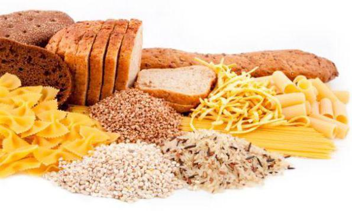

De Schijf van Vijf is de visuele voorstelling van de richtlijnen voor een gezond eetpatroon,
die sinds 1953 in Nederland wordt gebruikt in de voorlichting over goede en gezonde voeding, gericht op het grote publiek.
Wikipedia
Volop groente en fruit.
Eet je veel groente en fruit, dan verlagen ze het risico op hart- en vaatziekten, darmkanker en diabetes type 2.

Vooral volkoren.
Met het eten van volkoren verklein je het risico op hart- en vaatziekten, diabetes type 2 en darmkanker.
Dorstlessers zonder suiker.
In de Schijf van Vijf staan dranken zonder calorieën: water, koffie en thee.
Zachte en vloeibare vetten.
Onverzadigd vet is goed voor je bloedvaten. Denk aan olie en halvarine.

Meer plantaardig.
Meer plantaardig en minder vlees is goed voor jou én voor het milieu. Je kunt variëren met vis, peulvruchten, vlees, noten en ei.

Niet te veel en niet te vaak.
Je kunt prima af en toe iets buiten de Schijf van Vijf nemen. Onze vuistregels geven houvast.